DAN'S
ONLINE MOTORCYCLE COURSE
" HOMEWORK "
"Study to shew thyself approved unto God, a workman that needeth not to be ashamed, rightly dividing the word of truth." 2 Timothy 2:15
¶ Well this is a school, even if it is "Online", and every school has Homework. but unlike diagramming sentences in English class, this homework should be fun.
First I want you to find, beg, borrow or buy (but not steal!) several items. A salvage yard would sell this stuff cheap or maybe a friend might have these laying around.
- An old Motorcycle crankcase. It can be broken or dented but it must have a lot of it's screw holes in good condition...the threads have to be good.
- An old cylinder. It can be rusted but the fins have to be in good condition.
- A big bunch of bolts, nuts, screws, and flat washers in sizes from 6 mm on up to 12 mm.
- A big strong Vice.
- A good Torque Wrench.
- Strong sockets, of sizes to fit the bolts. Try to use impact grade sockets or at least the Guaranteed forever type.
- Safety Glasses
- The rest of your tool box.
First put on the safety Glasses, then I want you to take one of the 6 mm bolts, put a flat washer and 2 or 3, 8 mm nuts on it, then another flat washer. Now screw it into one of the threaded holes on the crankcase. 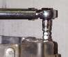
When you feel that you can reproduce this torque reliably, increase the amount by 5 LBs and then 5 Lbs more. Keep doing this until the threads in the crankcase strip out. I want you to get the " Feel " for the right torque for this bolt (7 to 10 Ft. Lbs) and for the torque that strips it out. We do this with a junk crankcase so you don't strip out a good one.
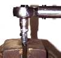
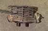 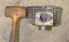
Try putting a large screw driver at the base of a fin and hit the end of the screw driver with a hammer. The fin doesn't break does it? Now try the same thing at the end of a fin. Breaks right off doesn't it? 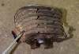
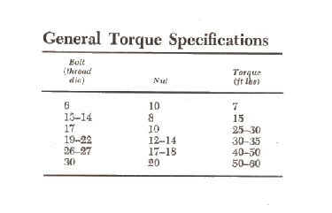
Here is some more homework. Go to the "Books of Yore" page Here. Now start reading. These are all old Technical books on Gas Engines. If you want to know where we are going on Motorcycle Engines, you need to know where we've been. In the early 1900s Engines were just starting to be developed. There are a lot of hints, tips, and procedures in these books that are just fascinating.
Interesting to note, at this time, 1900-1910, Bicycles were the "in" thing. Then Motorcycles took over. See the change from Bicycles to Motorcycles in the front page of this bike magazine.
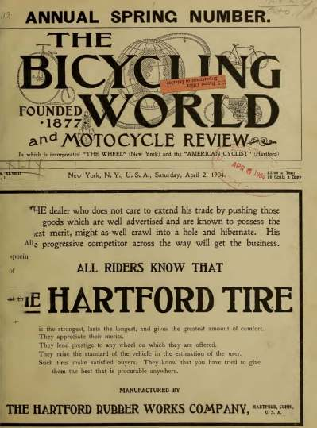 1904 |
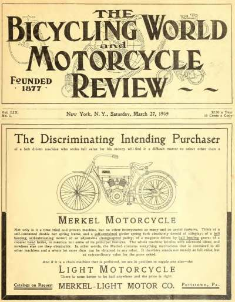 1909 |
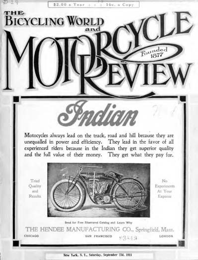 1911 |

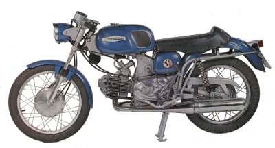 |
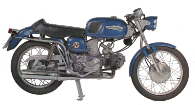 |
Copyright © 1999-2002 dansmc.com. All rights reserved.